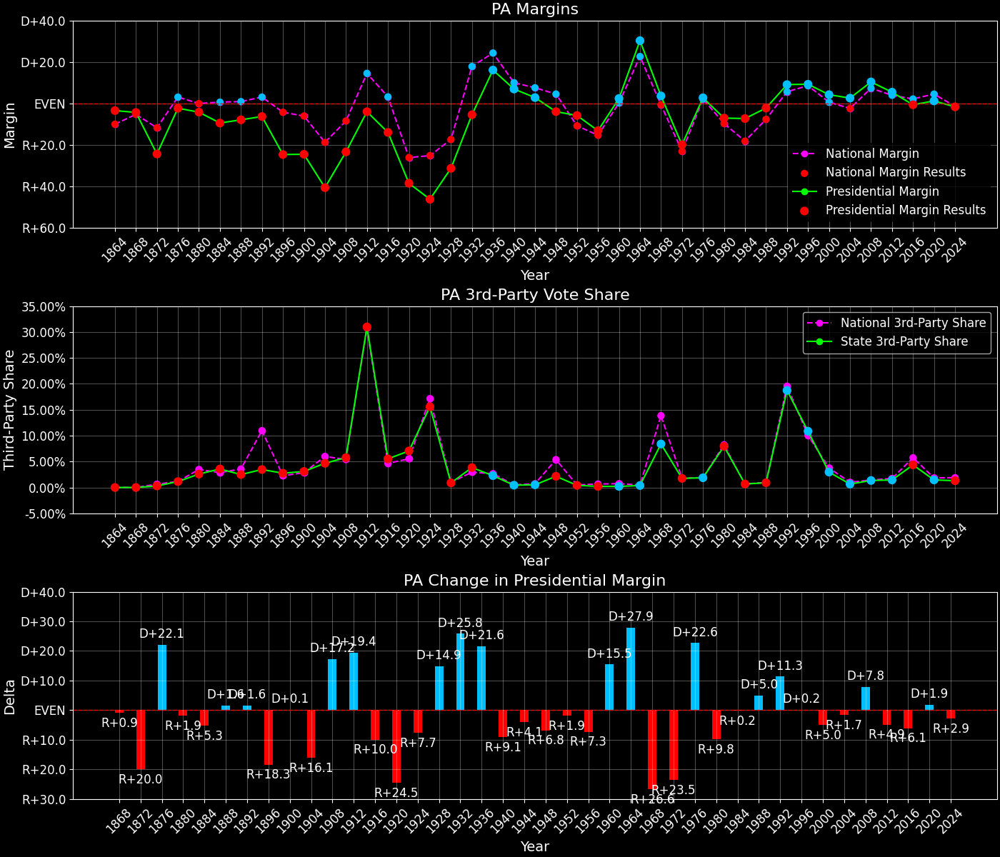
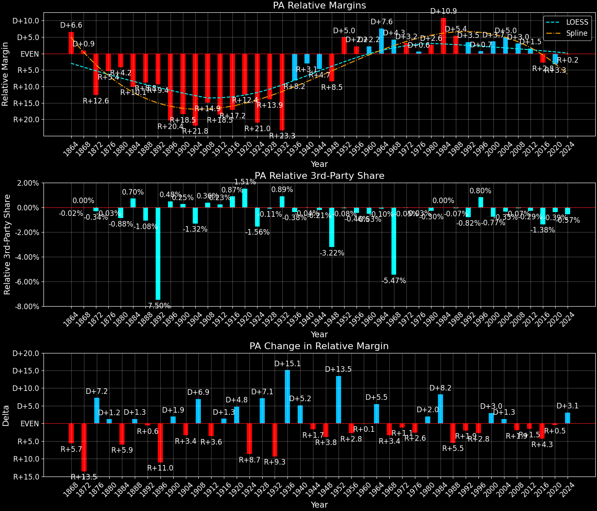
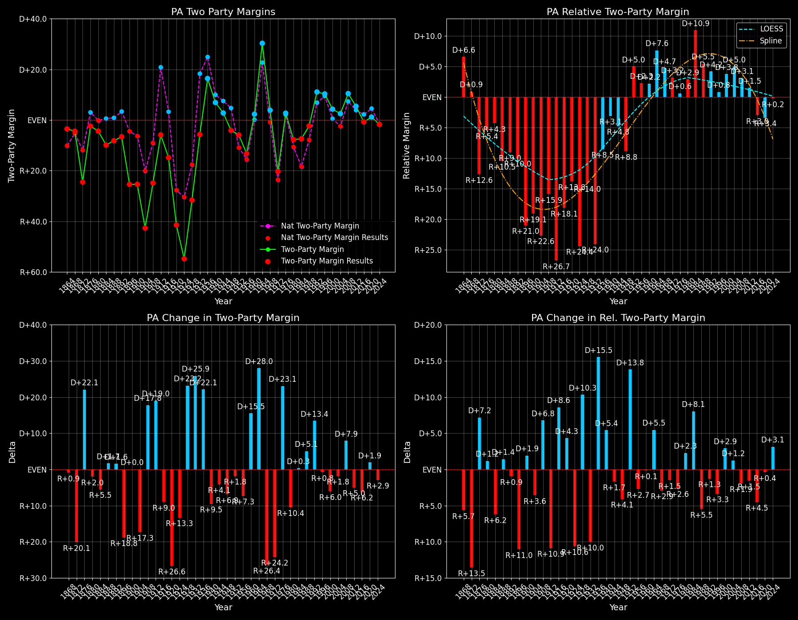

| Year | D | R | State Margin | Nat. Margin | Rel. Margin | Total votes | EVs |
|---|---|---|---|---|---|---|---|
| 1876 | 366,204(48.3%) | 384,184(50.7%) | R+2.4 | D+3.0 | R+5.4 | 758,993 | 29 |
| 1880 | 407,428(46.7%)(Δ 41,224) | 444,704(51.0%)(Δ 60,520) | R+4.3(Δ R+1.9) | R+0.1(Δ R+3.1) | R+4.2(Δ D+1.2) | 874,783(Δ 115,790) | 29 |
| 1884 | 392,785(44.2%)(Δ -14,643) | 478,804(53.9%)(Δ 34,100) | R+9.5(Δ R+5.3) | D+0.6(Δ D+0.7) | R+10.1(Δ R+5.9) | 903,864(Δ 29,081) | 30 |
| 1888 | 446,633(44.9%)(Δ 53,848) | 526,091(52.9%)(Δ 47,287) | R+8.0(Δ D+1.6) | D+0.8(Δ D+0.3) | R+8.8(Δ D+1.3) | 997,568(Δ 93,704) | 30 |
| 1892 | 452,264(45.5%)(Δ 5,631) | 516,011(51.9%)(Δ -10,080) | R+6.4(Δ D+1.6) | D+3.0(Δ D+2.2) | R+9.4(Δ R+0.6) | 1,003,010(Δ 5,442) | 32 |
| 1896 | 433,228(36.7%)(Δ -19,036) | 728,300(61.7%)(Δ 212,289) | R+24.7(Δ R+18.3) | R+4.3(Δ R+7.3) | R+20.4(Δ R+11.0) | 1,194,355(Δ 191,345) | 32 |
| 1900 | 424,232(36.4%)(Δ -8,996) | 712,665(61.2%)(Δ -15,635) | R+24.6(Δ D+0.1) | R+6.1(Δ R+1.8) | R+18.5(Δ D+1.9) | 1,173,210(Δ -21,145) | 32 |
| 1904 | 337,998(27.9%)(Δ -86,234) | 840,949(69.3%)(Δ 128,284) | R+40.7(Δ R+16.1) | R+18.8(Δ R+12.7) | R+21.8(Δ R+3.4) | 1,236,738(Δ 63,528) | 34 |
| 1908 | 448,782(36.4%)(Δ 110,784) | 745,779(60.6%)(Δ -95,170) | R+23.4(Δ D+17.2) | R+8.5(Δ D+10.3) | R+14.9(Δ D+6.9) | 1,267,450(Δ 30,712) | 34 |
| 1912 | 395,637(35.5%)(Δ -53,145) | 444,894(39.9%)(Δ -300,885) | R+4.0(Δ D+19.4) | D+14.4(Δ D+23.0) | R+18.5(Δ R+3.6) | 1,217,736(Δ -49,714) | 38 |
| 1916 | 521,784(41.1%)(Δ 126,147) | 703,823(55.5%)(Δ 258,929) | R+14.0(Δ R+10.0) | D+3.1(Δ R+11.3) | R+17.2(Δ D+1.3) | 1,297,189(Δ 79,453) | 38 |
| 1920 | 503,843(28.1%)(Δ -17,941) | 1,218,216(68.0%)(Δ 514,393) | R+38.6(Δ R+24.5) | R+26.2(Δ R+29.3) | R+12.4(Δ D+4.8) | 1,852,616(Δ 555,427) | 38 |
| 1924 | 409,192(19.3%)(Δ -94,651) | 1,401,481(66.2%)(Δ 183,265) | R+46.3(Δ R+7.7) | R+25.2(Δ D+1.0) | R+21.0(Δ R+8.7) | 2,144,850(Δ 292,234) | 38 |
| 1928 | 1,067,586(34.0%)(Δ 658,394) | 2,055,382(65.4%)(Δ 653,901) | R+31.4(Δ D+14.9) | R+17.4(Δ D+7.8) | R+13.9(Δ D+7.1) | 3,150,610(Δ 1,005,760) | 38 |
| 1932 | 1,295,948(45.6%)(Δ 228,362) | 1,453,540(51.2%)(Δ -601,842) | R+5.5(Δ D+25.8) | D+17.8(Δ D+35.2) | R+23.3(Δ R+9.3) | 2,859,177(Δ -291,433) | 36 |
| 1936 | 2,353,987(57.3%)(Δ 1,058,039) | 1,690,200(41.1%)(Δ 236,660) | D+16.0(Δ D+21.6) | D+24.3(Δ D+6.5) | R+8.2(Δ D+15.1) | 4,138,426(Δ 1,279,249) | 36 |
| 1940 | 2,171,035(53.3%)(Δ -182,952) | 1,889,848(46.4%)(Δ 199,648) | D+6.9(Δ R+9.1) | D+10.0(Δ R+14.3) | R+3.1(Δ D+5.2) | 4,078,714(Δ -59,712) | 36 |
| 1944 | 1,940,479(51.2%)(Δ -230,556) | 1,835,054(48.5%)(Δ -54,794) | D+2.8(Δ R+4.1) | D+7.5(Δ R+2.5) | R+4.7(Δ R+1.7) | 3,794,793(Δ -283,921) | 35 |
| 1948 | 1,752,426(47.2%)(Δ -188,053) | 1,902,197(51.3%)(Δ 67,143) | R+4.0(Δ R+6.8) | D+4.5(Δ R+3.0) | R+8.5(Δ R+3.8) | 3,735,148(Δ -59,645) | 35 |
| 1952 | 2,146,269(47.0%)(Δ 393,843) | 2,415,789(52.9%)(Δ 513,592) | R+5.9(Δ R+1.9) | R+10.9(Δ R+15.3) | D+5.0(Δ D+13.5) | 4,580,969(Δ 845,821) | 32 |
| 1956 | 1,981,769(43.3%)(Δ -164,500) | 2,585,252(56.5%)(Δ 169,463) | R+13.2(Δ R+7.3) | R+15.4(Δ R+4.5) | D+2.2(Δ R+2.8) | 4,576,503(Δ -4,466) | 32 |
| 1960 | 2,556,282(51.1%)(Δ 574,513) | 2,439,956(48.8%)(Δ -145,296) | D+2.3(Δ D+15.5) | D+0.2(Δ D+15.6) | D+2.2(Δ R+0.1) | 5,006,541(Δ 430,038) | 32 |
| 1964 | 3,130,954(65.2%)(Δ 574,672) | 1,673,657(34.8%)(Δ -766,299) | D+30.2(Δ D+27.9) | D+22.6(Δ D+22.4) | D+7.6(Δ D+5.5) | 4,822,690(Δ -183,851) | 29 |
| 1968 | 2,259,405(47.8%)(Δ -871,549) | 2,090,017(44.2%)(Δ 416,360) | D+3.6(Δ R+26.6) | R+0.7(Δ R+23.3) | D+4.3(Δ R+3.4) | 4,747,928(Δ -74,762) | 29 |
| 1972 | 1,796,951(39.2%)(Δ -462,454) | 2,714,521(59.2%)(Δ 624,504) | R+20.0(Δ R+23.5) | R+23.1(Δ R+22.4) | D+3.2(Δ R+1.1) | 4,592,105(Δ -155,823) | 27 |
| 1976 | 2,328,677(50.8%)(Δ 531,726) | 2,205,604(48.1%)(Δ -508,917) | D+2.7(Δ D+22.6) | D+2.1(Δ D+25.2) | D+0.6(Δ R+2.6) | 4,620,787(Δ 28,682) | 27 |
| 1980 | 1,937,540(43.1%)(Δ -391,137) | 2,261,872(50.3%)(Δ 56,268) | R+7.1(Δ R+9.8) | R+9.7(Δ R+11.8) | D+2.6(Δ D+2.0) | 4,561,501(Δ -59,286) | 27 |
| 1984 | 2,228,131(46.2%)(Δ 290,591) | 2,584,323(53.6%)(Δ 322,451) | R+7.4(Δ R+0.2) | R+18.2(Δ R+8.5) | D+10.9(Δ D+8.2) | 4,844,903(Δ 283,402) | 25 |
| 1988 | 2,194,944(48.7%)(Δ -33,187) | 2,300,087(51.0%)(Δ -284,236) | R+2.3(Δ D+5.0) | R+7.7(Δ D+10.5) | D+5.4(Δ R+5.5) | 4,536,251(Δ -308,652) | 25 |
| 1992 | 2,239,164(45.4%)(Δ 44,220) | 1,791,841(36.3%)(Δ -508,246) | D+9.0(Δ D+11.3) | D+5.6(Δ D+13.3) | D+3.5(Δ R+1.9) | 4,959,810(Δ 423,559) | 23 |
| 1996 | 2,215,819(49.8%)(Δ -23,345) | 1,801,169(40.5%)(Δ 9,328) | D+9.2(Δ D+0.2) | D+8.5(Δ D+3.0) | D+0.7(Δ R+2.8) | 4,506,118(Δ -453,692) | 23 |
| 2000 | 2,485,967(51.0%)(Δ 270,148) | 2,281,127(46.8%)(Δ 479,958) | D+4.2(Δ R+5.0) | D+0.5(Δ R+8.0) | D+3.7(Δ D+3.0) | 4,913,119(Δ 407,001) | 23 |
| 2004 | 2,938,095(51.1%)(Δ 452,128) | 2,793,847(48.6%)(Δ 512,720) | D+2.5(Δ R+1.7) | R+2.5(Δ R+3.0) | D+5.0(Δ D+1.3) | 5,769,590(Δ 856,471) | 21 |
| 2008 | 3,276,363(54.8%)(Δ 338,268) | 2,655,885(44.4%)(Δ -137,962) | D+10.3(Δ D+7.8) | D+7.3(Δ D+9.7) | D+3.0(Δ R+1.9) | 6,013,272(Δ 243,682) | 21 |
| 2012 | 2,990,274(52.3%)(Δ -286,089) | 2,680,434(46.9%)(Δ 24,549) | D+5.4(Δ R+4.9) | D+3.9(Δ R+3.4) | D+1.5(Δ R+1.5) | 5,753,670(Δ -259,602) | 20 |
| 2016 | 2,926,441(48.4%)(Δ -63,833) | 2,970,733(49.2%)(Δ 290,299) | R+0.7(Δ R+6.1) | D+2.1(Δ R+1.8) | R+2.8(Δ R+4.3) | 6,165,478(Δ 411,808) | 20 |
| 2020 | 3,458,229(50.0%)(Δ 531,788) | 3,377,674(48.8%)(Δ 406,941) | D+1.2(Δ D+1.9) | D+4.5(Δ D+2.4) | R+3.3(Δ R+0.5) | 6,936,976(Δ 771,498) | 20 |
| 2024 | 3,423,042(48.9%)(Δ -35,187) | 3,543,308(50.6%)(Δ 165,634) | R+1.7(Δ R+2.9) | R+1.5(Δ R+5.9) | R+0.2(Δ D+3.1) | 7,058,732(Δ 121,756) | 19 |
| Year | D | R | Other votes | State 3rd-Party Share | 3rd-Party Nat. Share | 3rd-Party Rel. Share |
|---|---|---|---|---|---|---|
| 1876 | 366,204(48.3%) | 384,184(50.7%) | 7,204(1.0%) | 1.13% | 1.16% | -0.03% |
| 1880 | 407,428(46.7%)(Δ 41,224) | 444,704(51.0%)(Δ 60,520) | 20,668(2.4%) | 2.59% | 3.47% | -0.88% |
| 1884 | 392,785(44.2%)(Δ -14,643) | 478,804(53.9%)(Δ 34,100) | 16,992(1.9%) | 3.57% | 2.87% | 0.70% |
| 1888 | 446,633(44.9%)(Δ 53,848) | 526,091(52.9%)(Δ 47,287) | 20,947(2.1%) | 2.49% | 3.57% | -1.08% |
| 1892 | 452,264(45.5%)(Δ 5,631) | 516,011(51.9%)(Δ -10,080) | 25,123(2.5%) | 3.46% | 10.97% | -7.50% |
| 1896 | 433,228(36.7%)(Δ -19,036) | 728,300(61.7%)(Δ 212,289) | 19,274(1.6%) | 2.75% | 2.27% | 0.48% |
| 1900 | 424,232(36.4%)(Δ -8,996) | 712,665(61.2%)(Δ -15,635) | 27,908(2.4%) | 3.10% | 2.84% | 0.25% |
| 1904 | 337,998(27.9%)(Δ -86,234) | 840,949(69.3%)(Δ 128,284) | 33,717(2.8%) | 4.67% | 5.99% | -1.32% |
| 1908 | 448,782(36.4%)(Δ 110,784) | 745,779(60.6%)(Δ -95,170) | 36,694(3.0%) | 5.75% | 5.39% | 0.36% |
| 1912 | 395,637(35.5%)(Δ -53,145) | 444,894(39.9%)(Δ -300,885) | 273,360(24.5%) | 30.98% | 30.74% | 0.23% |
| 1916 | 521,784(41.1%)(Δ 126,147) | 703,823(55.5%)(Δ 258,929) | 42,638(3.4%) | 5.52% | 4.64% | 0.87% |
| 1920 | 503,843(28.1%)(Δ -17,941) | 1,218,216(68.0%)(Δ 514,393) | 70,571(3.9%) | 7.05% | 5.53% | 1.51% |
| 1924 | 409,192(19.3%)(Δ -94,651) | 1,401,481(66.2%)(Δ 183,265) | 307,567(14.5%) | 15.58% | 17.14% | -1.56% |
| 1928 | 1,067,586(34.0%)(Δ 658,394) | 2,055,382(65.4%)(Δ 653,901) | 18,647(0.6%) | 0.88% | 0.99% | -0.11% |
| 1932 | 1,295,948(45.6%)(Δ 228,362) | 1,453,540(51.2%)(Δ -601,842) | 91,223(3.2%) | 3.84% | 2.94% | 0.89% |
| 1936 | 2,353,987(57.3%)(Δ 1,058,039) | 1,690,200(41.1%)(Δ 236,660) | 67,468(1.6%) | 2.28% | 2.66% | -0.38% |
| 1940 | 2,171,035(53.3%)(Δ -182,952) | 1,889,848(46.4%)(Δ 199,648) | 10,967(0.3%) | 0.44% | 0.48% | -0.04% |
| 1944 | 1,940,479(51.2%)(Δ -230,556) | 1,835,054(48.5%)(Δ -54,794) | 11,721(0.3%) | 0.51% | 0.72% | -0.21% |
| 1948 | 1,752,426(47.2%)(Δ -188,053) | 1,902,197(51.3%)(Δ 67,143) | 55,161(1.5%) | 2.16% | 5.38% | -3.22% |
| 1952 | 2,146,269(47.0%)(Δ 393,843) | 2,415,789(52.9%)(Δ 513,592) | 8,951(0.2%) | 0.41% | 0.49% | -0.08% |
| 1956 | 1,981,769(43.3%)(Δ -164,500) | 2,585,252(56.5%)(Δ 169,463) | 7,447(0.2%) | 0.21% | 0.67% | -0.46% |
| 1960 | 2,556,282(51.1%)(Δ 574,513) | 2,439,956(48.8%)(Δ -145,296) | 7,185(0.1%) | 0.21% | 0.73% | -0.53% |
| 1964 | 3,130,954(65.2%)(Δ 574,672) | 1,673,657(34.8%)(Δ -766,299) | 0(0.0%) | 0.37% | 0.48% | -0.10% |
| 1968 | 2,259,405(47.8%)(Δ -871,549) | 2,090,017(44.2%)(Δ 416,360) | 378,582(8.0%) | 8.39% | 13.86% | -5.47% |
| 1972 | 1,796,951(39.2%)(Δ -462,454) | 2,714,521(59.2%)(Δ 624,504) | 70,593(1.5%) | 1.76% | 1.80% | -0.05% |
| 1976 | 2,328,677(50.8%)(Δ 531,726) | 2,205,604(48.1%)(Δ -508,917) | 50,584(1.1%) | 1.87% | 1.90% | -0.03% |
| 1980 | 1,937,540(43.1%)(Δ -391,137) | 2,261,872(50.3%)(Δ 56,268) | 292,921(6.5%) | 7.94% | 8.24% | -0.30% |
| 1984 | 2,228,131(46.2%)(Δ 290,591) | 2,584,323(53.6%)(Δ 322,451) | 6,982(0.1%) | 0.67% | 0.67% | 0.00% |
| 1988 | 2,194,944(48.7%)(Δ -33,187) | 2,300,087(51.0%)(Δ -284,236) | 12,051(0.3%) | 0.91% | 0.98% | -0.07% |
| 1992 | 2,239,164(45.4%)(Δ 44,220) | 1,791,841(36.3%)(Δ -508,246) | 902,667(18.3%) | 18.73% | 19.55% | -0.82% |
| 1996 | 2,215,819(49.8%)(Δ -23,345) | 1,801,169(40.5%)(Δ 9,328) | 430,984(9.7%) | 10.85% | 10.05% | 0.80% |
| 2000 | 2,485,967(51.0%)(Δ 270,148) | 2,281,127(46.8%)(Δ 479,958) | 103,392(2.1%) | 2.97% | 3.75% | -0.77% |
| 2004 | 2,938,095(51.1%)(Δ 452,128) | 2,793,847(48.6%)(Δ 512,720) | 21,185(0.4%) | 0.65% | 1.00% | -0.35% |
| 2008 | 3,276,363(54.8%)(Δ 338,268) | 2,655,885(44.4%)(Δ -137,962) | 42,977(0.7%) | 1.35% | 1.42% | -0.07% |
| 2012 | 2,990,274(52.3%)(Δ -286,089) | 2,680,434(46.9%)(Δ 24,549) | 49,991(0.9%) | 1.44% | 1.73% | -0.29% |
| 2016 | 2,926,441(48.4%)(Δ -63,833) | 2,970,733(49.2%)(Δ 290,299) | 146,715(2.4%) | 4.35% | 5.73% | -1.38% |
| 2020 | 3,458,229(50.0%)(Δ 531,788) | 3,377,674(48.8%)(Δ 406,941) | 79,380(1.1%) | 1.46% | 1.84% | -0.39% |
| 2024 | 3,423,042(48.9%)(Δ -35,187) | 3,543,308(50.6%)(Δ 165,634) | 34,538(0.5%) | 1.31% | 1.88% | -0.57% |

| Year | D | R | 2-Party Margin | 2-Party Nat. Margin | 2-Party Rel. Margin | EVs |
|---|---|---|---|---|---|---|
| 1876 | 366,204(48.8%) | 384,184(51.2%) | R+2.4 | D+3.0 | R+5.4 | 29 |
| 1880 | 407,428(47.8%)(Δ 41,224) | 444,704(52.2%)(Δ 60,520) | R+4.4(Δ R+2.0) | R+0.1(Δ R+3.1) | R+4.3(Δ D+1.2) | 29 |
| 1884 | 392,785(45.1%)(Δ -14,643) | 478,804(54.9%)(Δ 34,100) | R+9.9(Δ R+5.5) | D+0.6(Δ D+0.7) | R+10.5(Δ R+6.2) | 30 |
| 1888 | 446,633(45.9%)(Δ 53,848) | 526,091(54.1%)(Δ 47,287) | R+8.2(Δ D+1.7) | D+0.9(Δ D+0.3) | R+9.0(Δ D+1.4) | 30 |
| 1892 | 452,264(46.7%)(Δ 5,631) | 516,011(53.3%)(Δ -10,080) | R+6.6(Δ D+1.6) | D+3.4(Δ D+2.5) | R+10.0(Δ R+0.9) | 32 |
| 1896 | 433,228(37.3%)(Δ -19,036) | 728,300(62.7%)(Δ 212,289) | R+25.4(Δ R+18.8) | R+4.4(Δ R+7.8) | R+21.0(Δ R+11.0) | 32 |
| 1900 | 424,232(37.3%)(Δ -8,996) | 712,665(62.7%)(Δ -15,635) | R+25.4(Δ D+0.0) | R+6.3(Δ R+1.9) | R+19.1(Δ D+1.9) | 32 |
| 1904 | 337,998(28.7%)(Δ -86,234) | 840,949(71.3%)(Δ 128,284) | R+42.7(Δ R+17.3) | R+20.0(Δ R+13.7) | R+22.6(Δ R+3.6) | 34 |
| 1908 | 448,782(37.6%)(Δ 110,784) | 745,779(62.4%)(Δ -95,170) | R+24.9(Δ D+17.8) | R+9.0(Δ D+11.0) | R+15.9(Δ D+6.8) | 34 |
| 1912 | 395,637(47.1%)(Δ -53,145) | 444,894(52.9%)(Δ -300,885) | R+5.9(Δ D+19.0) | D+20.9(Δ D+29.9) | R+26.7(Δ R+10.9) | 38 |
| 1916 | 521,784(42.6%)(Δ 126,147) | 703,823(57.4%)(Δ 258,929) | R+14.9(Δ R+9.0) | D+3.3(Δ R+17.6) | R+18.1(Δ D+8.6) | 38 |
| 1920 | 503,843(29.3%)(Δ -17,941) | 1,218,216(70.7%)(Δ 514,393) | R+41.5(Δ R+26.6) | R+27.7(Δ R+31.0) | R+13.8(Δ D+4.3) | 38 |
| 1924 | 409,192(22.6%)(Δ -94,651) | 1,401,481(77.4%)(Δ 183,265) | R+54.8(Δ R+13.3) | R+30.4(Δ R+2.7) | R+24.4(Δ R+10.6) | 38 |
| 1928 | 1,067,586(34.2%)(Δ 658,394) | 2,055,382(65.8%)(Δ 653,901) | R+31.6(Δ D+23.2) | R+17.6(Δ D+12.8) | R+14.0(Δ D+10.3) | 38 |
| 1932 | 1,295,948(47.1%)(Δ 228,362) | 1,453,540(52.9%)(Δ -601,842) | R+5.7(Δ D+25.9) | D+18.3(Δ D+35.9) | R+24.0(Δ R+10.0) | 36 |
| 1936 | 2,353,987(58.2%)(Δ 1,058,039) | 1,690,200(41.8%)(Δ 236,660) | D+16.4(Δ D+22.1) | D+24.9(Δ D+6.6) | R+8.5(Δ D+15.5) | 36 |
| 1940 | 2,171,035(53.5%)(Δ -182,952) | 1,889,848(46.5%)(Δ 199,648) | D+6.9(Δ R+9.5) | D+10.0(Δ R+14.9) | R+3.1(Δ D+5.4) | 36 |
| 1944 | 1,940,479(51.4%)(Δ -230,556) | 1,835,054(48.6%)(Δ -54,794) | D+2.8(Δ R+4.1) | D+7.5(Δ R+2.5) | R+4.8(Δ R+1.7) | 35 |
| 1948 | 1,752,426(48.0%)(Δ -188,053) | 1,902,197(52.0%)(Δ 67,143) | R+4.1(Δ R+6.9) | D+4.7(Δ R+2.8) | R+8.8(Δ R+4.1) | 35 |
| 1952 | 2,146,269(47.0%)(Δ 393,843) | 2,415,789(53.0%)(Δ 513,592) | R+5.9(Δ R+1.8) | R+10.9(Δ R+15.6) | D+5.0(Δ D+13.8) | 32 |
| 1956 | 1,981,769(43.4%)(Δ -164,500) | 2,585,252(56.6%)(Δ 169,463) | R+13.2(Δ R+7.3) | R+15.5(Δ R+4.6) | D+2.3(Δ R+2.7) | 32 |
| 1960 | 2,556,282(51.2%)(Δ 574,513) | 2,439,956(48.8%)(Δ -145,296) | D+2.3(Δ D+15.5) | D+0.2(Δ D+15.7) | D+2.2(Δ R+0.1) | 32 |
| 1964 | 3,130,954(65.2%)(Δ 574,672) | 1,673,657(34.8%)(Δ -766,299) | D+30.3(Δ D+28.0) | D+22.7(Δ D+22.5) | D+7.6(Δ D+5.5) | 29 |
| 1968 | 2,259,405(51.9%)(Δ -871,549) | 2,090,017(48.1%)(Δ 416,360) | D+3.9(Δ R+26.4) | R+0.8(Δ R+23.5) | D+4.7(Δ R+2.9) | 29 |
| 1972 | 1,796,951(39.8%)(Δ -462,454) | 2,714,521(60.2%)(Δ 624,504) | R+20.3(Δ R+24.2) | R+23.6(Δ R+22.8) | D+3.2(Δ R+1.5) | 27 |
| 1976 | 2,328,677(51.4%)(Δ 531,726) | 2,205,604(48.6%)(Δ -508,917) | D+2.7(Δ D+23.1) | D+2.1(Δ D+25.7) | D+0.6(Δ R+2.6) | 27 |
| 1980 | 1,937,540(46.1%)(Δ -391,137) | 2,261,872(53.9%)(Δ 56,268) | R+7.7(Δ R+10.4) | R+10.6(Δ R+12.7) | D+2.9(Δ D+2.3) | 27 |
| 1984 | 2,228,131(46.3%)(Δ 290,591) | 2,584,323(53.7%)(Δ 322,451) | R+7.4(Δ D+0.3) | R+18.3(Δ R+7.7) | D+10.9(Δ D+8.1) | 25 |
| 1988 | 2,194,944(48.8%)(Δ -33,187) | 2,300,087(51.2%)(Δ -284,236) | R+2.3(Δ D+5.1) | R+7.8(Δ D+10.5) | D+5.5(Δ R+5.5) | 25 |
| 1992 | 2,239,164(55.5%)(Δ 44,220) | 1,791,841(44.5%)(Δ -508,246) | D+11.1(Δ D+13.4) | D+6.9(Δ D+14.7) | D+4.2(Δ R+1.3) | 23 |
| 1996 | 2,215,819(55.2%)(Δ -23,345) | 1,801,169(44.8%)(Δ 9,328) | D+10.3(Δ R+0.8) | D+9.5(Δ D+2.6) | D+0.8(Δ R+3.3) | 23 |
| 2000 | 2,485,967(52.1%)(Δ 270,148) | 2,281,127(47.9%)(Δ 479,958) | D+4.3(Δ R+6.0) | D+0.5(Δ R+8.9) | D+3.8(Δ D+2.9) | 23 |
| 2004 | 2,938,095(51.3%)(Δ 452,128) | 2,793,847(48.7%)(Δ 512,720) | D+2.5(Δ R+1.8) | R+2.5(Δ R+3.0) | D+5.0(Δ D+1.2) | 21 |
| 2008 | 3,276,363(55.2%)(Δ 338,268) | 2,655,885(44.8%)(Δ -137,962) | D+10.5(Δ D+7.9) | D+7.4(Δ D+9.9) | D+3.1(Δ R+1.9) | 21 |
| 2012 | 2,990,274(52.7%)(Δ -286,089) | 2,680,434(47.3%)(Δ 24,549) | D+5.5(Δ R+5.0) | D+3.9(Δ R+3.4) | D+1.5(Δ R+1.5) | 20 |
| 2016 | 2,926,441(49.6%)(Δ -63,833) | 2,970,733(50.4%)(Δ 290,299) | R+0.8(Δ R+6.2) | D+2.2(Δ R+1.7) | R+3.0(Δ R+4.5) | 20 |
| 2020 | 3,458,229(50.6%)(Δ 531,788) | 3,377,674(49.4%)(Δ 406,941) | D+1.2(Δ D+1.9) | D+4.5(Δ D+2.3) | R+3.4(Δ R+0.4) | 20 |
| 2024 | 3,423,042(49.1%)(Δ -35,187) | 3,543,308(50.9%)(Δ 165,634) | R+1.7(Δ R+2.9) | R+1.5(Δ R+6.0) | R+0.2(Δ D+3.1) | 19 |